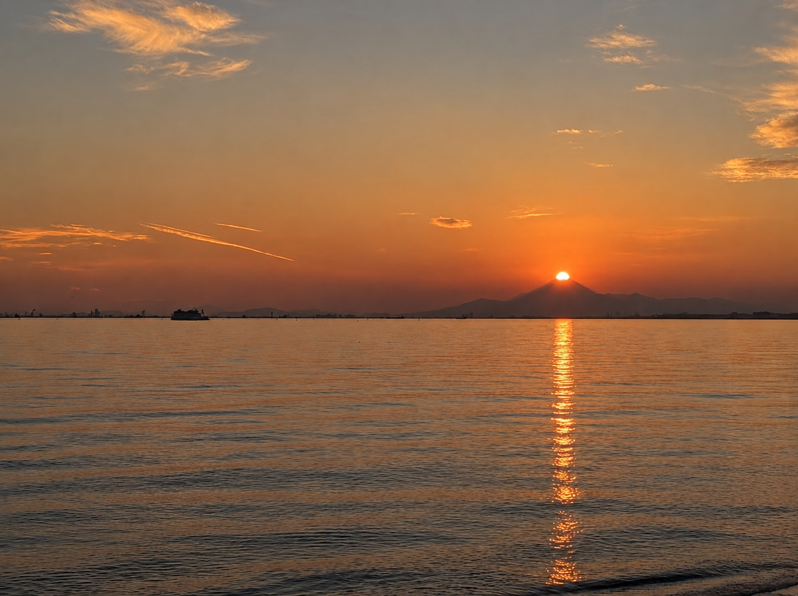
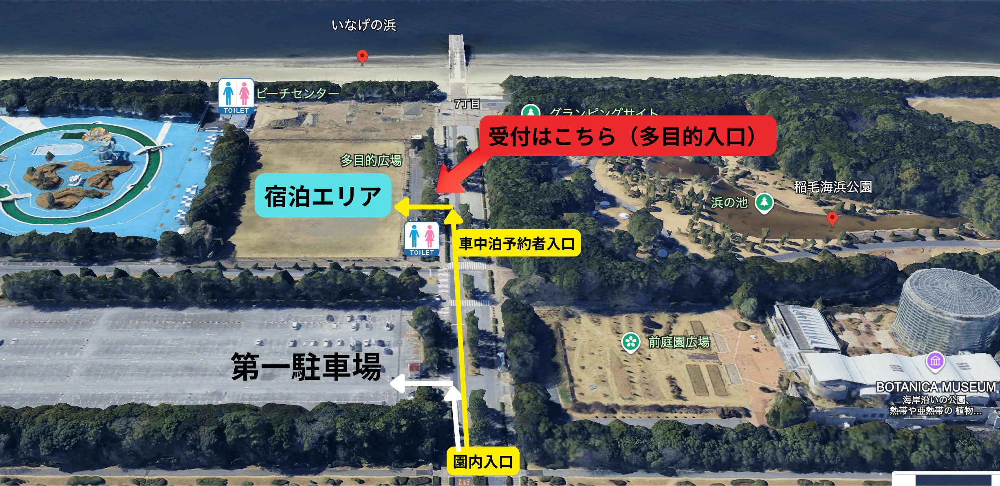

テント泊の方Tent guests
第一駐車場から徒歩で受付へ。第一・第二駐車場は有料です。多目的広場に近いのは第一駐車場です。Walk to reception from Parking Lot 1, the closest lot to the plaza. Parking Lots 1 and 2 charge a fee.

SUNSET DOG CAMP 2026
GUEST GUIDE / 10.17 SAT — 10.18 SUN
WELCOME TO INAGE
稲毛海浜公園 多目的広場へようこそ。
愛犬と一緒でも、犬を連れていなくても。
海辺の一夜を、心地よく過ごすために。Welcome to the multipurpose plaza at Inage Seaside Park.
With your dog or without, settle in for a night by the sea.
10月17日（土）11:00から宿泊受付を開始します。テント泊・車中泊ともに、多目的広場入口の受付へお越しください。受付後はスタッフがご案内します。Check-in opens at 11:00 on Saturday, October 17. All tent and car-stay guests should check in at the multipurpose plaza entrance. Follow staff directions after checking in.
第一駐車場から徒歩で受付へ。第一・第二駐車場は有料です。多目的広場に近いのは第一駐車場です。Walk to reception from Parking Lot 1, the closest lot to the plaza. Parking Lots 1 and 2 charge a fee.
マップの黄色い導線を通り、受付へ。受付は20:00までです。車両移動はスタッフの指示に従ってください。Follow the yellow route on the map to reception. Car-stay check-in closes at 20:00. Follow staff directions when moving your vehicle.

赤い矢印：受付 ／ 水色：宿泊エリア ／ 黄色：車中泊の導線。トイレは園内の公衆トイレをご利用ください。Map key: red arrow = reception; turquoise = camping area; yellow route = car-stay access. “第一駐車場” = Parking Lot 1. Use the public toilets shown by the toilet symbols.
Googleマップで会場を確認View the venue on Google Maps ↗OCTOBER 17 / SATURDAY
車中泊の受付は20:00まで。Car-stay check-in closes at 20:00.
ダイヤモンド富士に備え、早めにいなげの浜へ。Arrive early at Inage Beach for Diamond Fuji.
天候・観賞位置によって見え方が変わります。Visibility depends on the weather and your viewing position.
残り火がないことを確認してください。Make sure no embers remain.
灯りは必要最小限に。静かにお過ごしください。Keep lighting to a minimum and keep noise down.
食べ残し・容器・炭・灰・犬の排泄物も各自でお持ち帰りください。夜間はテント周辺に放置しないでください。As a rule, take all waste home, including leftovers, packaging, charcoal, ash and dog waste. Do not leave waste outside your tent overnight.
焚き火は21:00までに完全消火。直火・BBQ・花火は禁止です。強風時は火気使用を中止する場合があります。Extinguish all fires completely by 21:00. A raised fire pit and fireproof sheet are required. No ground fires, BBQs or fireworks. Fire use may be suspended in strong winds.
湯沸かし・スープ温め・カップ麺などの簡易加熱のみ可。車内・テント内では火気を使わないでください。Only simple heating, such as boiling water, warming soup or preparing cup noodles, is allowed. No full cooking. Never use flames inside vehicles or tents.
照明は必要最小限に。大きな声・音楽・周囲に響く音はお控えください。カラオケ・発電機の使用は禁止です。Use only essential lighting. Avoid loud voices, music and other noise. Karaoke and generators are prohibited.
愛犬から目を離さず、必要な場所ではリードを着用してください。排泄物の処理、周囲への配慮をお願いします。事故・けが・盗難・紛失等に備え、安全とお荷物は各自で管理してください。Keep your dog supervised and on a lead wherever required. Clean up after your dog and be considerate of others. Take responsibility for your safety and belongings against accidents, injuries, theft and loss.
強風・荒天・災害等により、安全な開催が困難と主催者が判断した場合は、内容変更または開催中止となる場合があります。車中泊は雨天開催。主催者判断による中止の場合、車中泊料金は返金します。テント泊の中止時の料金の扱いは、主催者から別途ご案内します。当日はスタッフの指示に従ってください。The organizer may change or cancel the event if strong winds, severe weather, disasters or other conditions make it unsafe. Car stays go ahead in rain. If the organizer cancels, car-stay fees will be refunded. Information on tent-stay fees following cancellation will be provided separately by the organizer. Follow staff instructions on the day.
園内にはキッチンカーやボタニカレストランがあります。お食事やひと休みにご利用ください。Food trucks and Botanica Restaurant are available in the park. Enjoy a meal or take a relaxing break.
お買い物はお早めに。車中泊の方は、チェックイン前に必要なものをご用意ください。Shop early. Car-stay guests should buy everything they need before check-in.
周辺店舗を地図で探すFind nearby stores on Maps ↗園内のシェアサイクルは周辺への移動に便利です。空き状況・利用方法は公式案内をご確認ください。Shared bicycles in the park are useful for local trips. Check availability and how to ride on the official site.
ステーションマップStation map ↗会場にお風呂・シャワーはありません。近隣の「JFA夢フィールド 幕張温泉 湯楽の里」をご利用いただけます。営業時間・料金は公式サイトでご確認ください。There are no baths or showers at the venue. JFA Yume Field Makuhari Onsen Yurakunosato is nearby. Check its official site for hours and prices.
施設の公式サイトOfficial spa website ↗園内の焚き火体験は予約制・数量限定です。宿泊エリアの焚き火とは別サービスです。公式予約案内の「TAKIBI」からご確認ください。The park’s fire experience requires a reservation, with limited availability. This is a separate service from fires in the camping area. See TAKIBI on the official reservations page.
焚き火の予約案内Fire experience reservations ↗通常のお問い合わせ／稲毛記念館General inquiries / Inage Memorial Hall
043-277-4534イベント当日の緊急連絡先Event-day emergency contact
070-8822-3857生命に関わる緊急時は 119（救急・消防） ／ 110（警察） へ。In a life-threatening emergency, call 119 (ambulance / fire) or 110 (police).
KEEP A COPY
日本語PDFを開く・保存するOpen / save the Japanese PDF ↗電波が不安定な場合に備え、事前にPDFやマップを保存しておくと安心です。Save the PDF and map in advance in case your connection is weak.